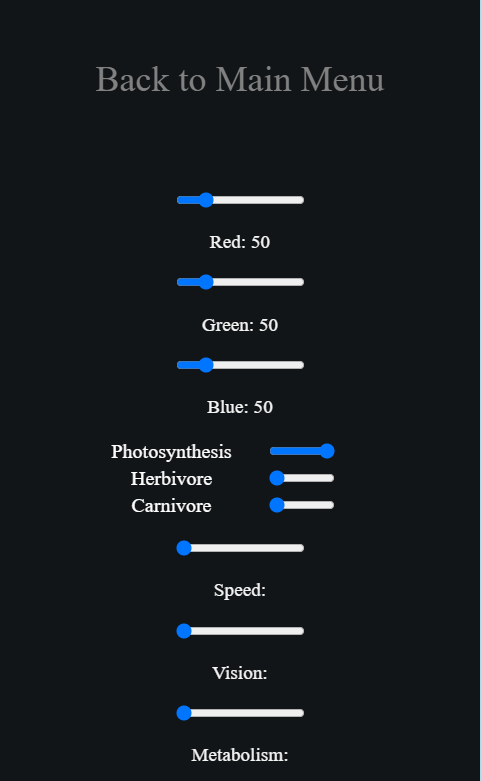
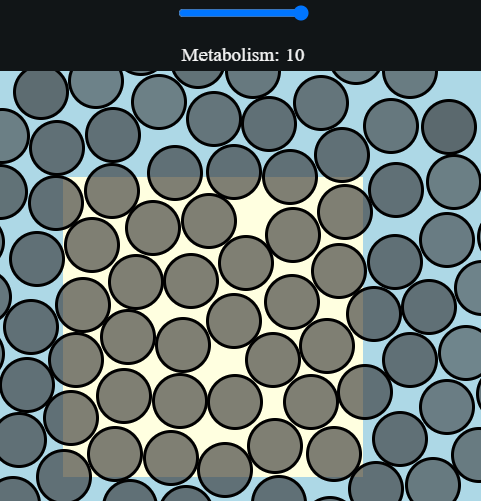
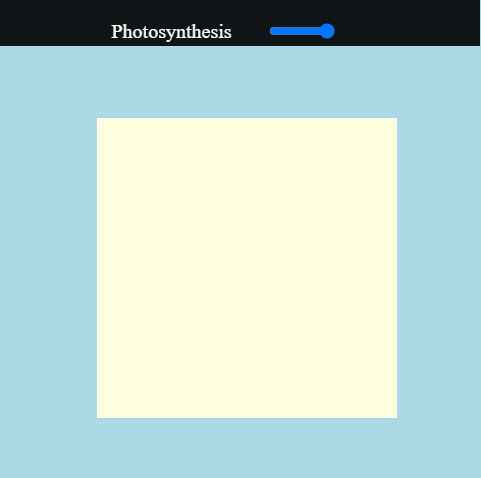
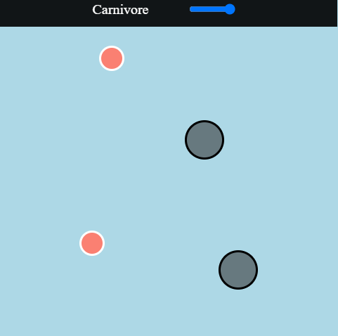

În Evolution Race, vrei să ajuți celulele să revină la zilele lor de glorie. Fiecare nivel are un obiectiv care se afișează la început. Dacă atingi un anumit obiectiv, câștigi nivelul. Pentru a juca nivelul și a ajuta celulele, trebuie să utilizați panoul de joc din colțul din dreapta sus. După ce faceți clic pe butonul, veți vedea că apare un meniu. Există câteva setări în acel meniu pe care trebuie să le folosești pentru a câștiga. Setările se actualizează, de asemenea, în timp real, astfel încât să puteți face alegeri inteligente sau, mai bine, să schimbați culoarea celulelor dumneavoastră. Celulele dumneavoastră se divid automat când au suficientă energie. Rețineți că puteți utiliza doar o trăsătură odată, dar puteți folosi mai multe glisoare în detrimentul punctelor. Diferitele trăsături reprezintă modul în care celulele pot mânca. Transparența reprezintă câtă energie are celula.De asemenea, puteți modifica setările celulelor înainte de a le plasa.

Glisorul pentru metabolism consumă puncte, dar reduce energia pe care celulele tale o pierd, ceea ce înseamnă că celulele tale nu au nevoie să mănânce atât de mult pentru a supraviețui. Acest lucru este foarte util și îl vei folosi în aproape toate nivelele. Cu cât au celulele tale metabolismul mai mare, cu atât vei avea mai multe celule.

Glisorul de viteză consumă puncte, dar face celulele tale să se miște mai repede, ceea ce înseamnă că celulele tale vor mânca lucrurile mai repede. Acest lucru este foarte util și îl veți folosi în multe niveluri. Cu cât au celulele tale viteza mai mare, cu atât vor putea mânca mai multe lucruri.

Glisorul de vedere consumă puncte, dar face celulele tale să vadă mai mult, ceea ce înseamnă că celulele tale vor mânca lucruri mai departe. Acest lucru este foarte util și îl veți folosi în mai multe niveluri. Cu cât au celulele tale vederea mai largă, cu atât vor putea mânca mai multe lucruri pe hartă. Vederea 0 înseamnă că celula nu vede.

Trăsătura de fotosinteză este prima pe care o vei folosi și cea mai importantă. Dacă vedeți vreodată o rază de lumină în nivel, trăsătura de fotosinteză este probabil cea care trebuie utilizată. O rază de lumină arată ca un pătrat și trebuie să plasați celulele pe ea pentru ca acestea să poată folosi fotosinteza.

Trăsătura erbivoră este a doua pe care o vei folosi și una pe care nu ar trebui să o uitați. Dacă vedeți vreodată pete de iarbă în nivel, trăsătura ierbivoră este probabil cea care trebuie utilizată. O pată de iarbă arată ca o celulă, dar este mult mai mică și întotdeauna verde. Celulele tale merg automat după petele de iarbă în această setare, dar numai dacă au viziunea să le vadă.

Trăsătura carnivoră este ultima pe care o vei folosi și una de care ar trebui să fie luată în considerare. Dacă vezi vreodată alte celule în nivel, trăsătura carnivoră este probabil o modalitate bună de a câștiga nivelul. Alte celule arată ca celula ta, dar sunt mai mici și întotdeauna roșii. Celulele tale merg automat după celulele „rele” în această setare, dar numai dacă au viziunea să le vadă. Rețineți că aceste celule fug dacă sunt urmărite.
